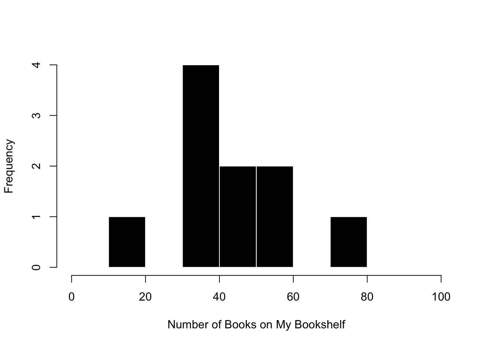
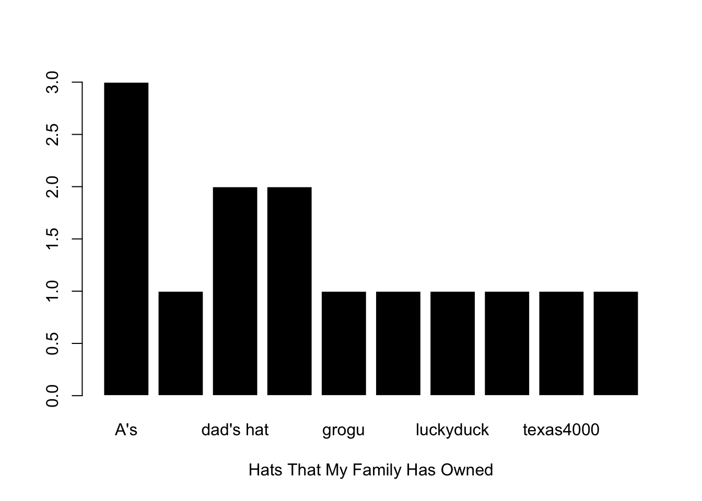

Professor answers below in these green boxes. Note that normally the key will post 1-week after the Lab deadline. I’ve posted this one so you can use it as a guide as we start the semester.
Create a Google Doc to answer these questions. Please number your responses to help your GSI grade. There’s no word count, and we won’t penalize students for grammar or spelling. Do your best to explain your ideas in your own words, and if you get stuck or confused, post on Discord / ask your GSI / explain why you got stuck and what you tried to do to figure things out.
Define a numeric variable in R. “Print” the variable in R. Then, graph the numeric variable as a “histogram”, and change some arguments in the graph to make it look “nice”. Below the graph, describe what you observe about the individuals in the dataset for each variable and describe other questions you have about the variable.
hist(book.shelf, col ="black", bor ="white",xlab ="Number of Books on My Bookshelf",main ="", xlim =c(0,100))

What I see :
I see that shelves differ in the number of books they hold
Every self has a book.
Most shelves seem to hold around 40 books.
Additional Questions
What is the upper limit of a bookshelf?
Why do I have so many books that I haven’t read yet?
Why do I keep books that I have already read?
Define a categorical variable in R. “Print” the variable in R (make sure you save it as a factor). Then, graph the variable as a “plot”, and change some arguments in the graph to make it look “nice”. Below the graph, describe what you observe about the individuals in the dataset and describe other questions you have about the variable.
hats <-c("butterfly", "union", "hummingbird", "grogu", "texas4000", "A's", "A's", "dad's hat","luckyduck", "padre island", "A's", "dad's hat", "floppystraw", "floppystraw")hatF <-as.factor(hats)plot(hatF, col ="black", bor ="white",main ="", xlab ="Hats That My Family Has Owned")

THINGS I OBSERVE :
We have too many hats given the number of heads in our household.
This family root(ed) for the A’s (edit : no longer as they betrayed Oakland and left and I’m still quite bitter about it and stopped watching or listening to baseball…go dodgers go yankees. that’s right I said what I said.)
QUESTIONS I HAVE :
What predicts which hat someone will choose.
Why do kids resist wearing hats.
Does wearing a hat make you bald.
What’s a prediction about people that you made today? What information did you use to make this prediction? How did (or could) you use this prediction to influence outcomes? Were you valid in your predictions? Finally, write a linear model that defines the prediction (and information that you used) as a formula (e.g., DV ~ IV1 + IV2 + … + error).
I predicted that my child would not remember that I told him we could play “Hoot Hoot Owl” when he woke up in the morning (after he threw a temper tantrum because we ran out of time to play last night.) I used the information that he is three years old and often has many interests to make this prediction. After making this prediction, I hit snooze on my alarm clock and got some extra sleep since I didn’t think I needed to get breakfast and lunch ready to make time for a board game in the morning. I was not valid, and he immediately asked to play the game. (We rushed breakfast and we found time to play.)
As a model, this would be written as : memory of specific promise ~ age + interest in activity + time + error
Let’s keep focusing on your final project.
A. Identify a research question that you might be interested to study as a psychologist (this could be what you wrote about in Lab 1, or something new.)
My question is what’s the consequence of seeing bombed out images of war-torn countries on people’s perceptions of the inhabitants of the countries that were bombed / war-torn?
I think this matters because we live in a very violent society, and are exposed to lots of images of destruction. I think on one hand, these images can motivate people to feel empathy and compassion toward the victims of bombing. On the other hand, I wonder if it desensitizes people, and dehumanizes people in some ways - if all my exposure to a group of people is seeing them as victims, then I may not see them as full humans. This is my question though!
I’m very interested in this question; been thinking about it the past few years - just want and need to find the time? Let me know if you are reading this and also interested and maybe we can start an informal reading group?
B. Then, define the DV for this question, and explain what interests you about this question and how this variable might be understood as an example of affect, behavior, and/or cognition.
There are two variables here - exposure to violent images in the news and people’s perceptions of the inhabitants of countries that are bombed. The focus of the question is really about people’s perceptions of the inhabitants of the countries that are bombed.
affect : emotional feelings toward the victims : compassion, interest,
behavior : helping behaviors toward victims; desire to seek out more information about victims / war.
cognition : perceptions of humanization / dehumanization; prejudice for / against the victims.
I think all 3 are interesting, though I’m more interested in the affect and cognition pieces of this question.
C. Explain what between-person and within-person variation might look like for this variable.
Between person variation : how much someone who sees war images differs in their perception of dehumanization compared to someone who sees non-war images.
Within-person variation : how much someone’s perceptions of dehumanization change after seeing war images.
D. Identify some other variables that you think will predict this DV, and write out this question (and your theory) as a linear model.
dehumanization of victims ~ exposure to war vs. non-war images + political orientation + age + gender +